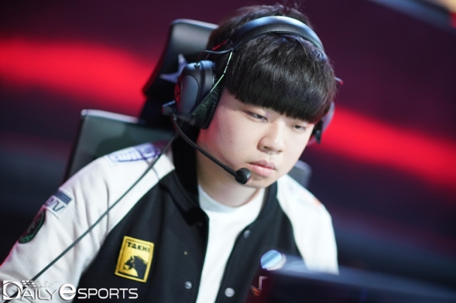

[OSEN=임재형 기자] SK텔레콤의 엔진 ‘클리드’ 김태민이 ‘2019 LOL 월드 챔피언십(이하 롤드컵)’을 앞두고 공개된 ‘파워랭킹 탑20’에서 2위에 등극했다. 4대 리그(한국 유럽 북미 중국) 선수들이 랭킹을 지배한 가운데 ‘LOL 챔피언스 코리아(LCK)’ 선수들은 총 5명이 이름을 올렸다.
ESPN은 26일 오전(이하 한국시간) 2019 시즌 롤드컵에 참가한 선수들의 ‘파워랭킹 탑20’을 발표했다. 그랜드 슬램을 노리는 ‘LOL 유로피안 챔피언십(이하 LEC)’ G2의 중심 ‘얀코스’ 마르친 얀코프스키가 1위 자리를 차지했고, 김태민은 곧바로 뒤를 이어 2위에 랭크되며 기대감을 높였다.